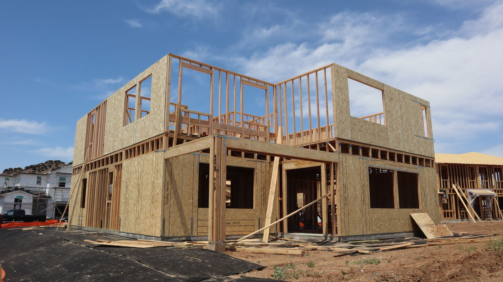

Quick answer: A duplex builder in Sydney holds the same NSW Fair Trading contractor licence (General Building) as any residential builder. The label “duplex builder” is not a regulated classification — anyone with a general building licence can legally build a duplex. What distinguishes a capable one is specificity: documented DA approvals or CDC certificates in your council, active HBCF insurance eligibility above your contract value, a fixed-price scope that explicitly covers both dwellings’ independent utility connections, and genuine Torrens title subdivision experience managed by them rather than left to you at handover. Verify the track record, not the label.
Finding a duplex builder in Sydney produces the same result as most Google searches for tradespeople: a lot of results, a lot of claims, and a very small number of firms with recent, council-specific, verified dual occupancy experience.
The supply side is the problem. Since the NSW government made dual occupancy an as-of-right option in most R2 zones in July 2024, every builder with a general contractor licence technically qualifies to describe themselves as a duplex builder. Several hundred genuinely are. The rest added the word to their website and moved on.
[Right. Straight face now.] This guide covers what the credential actually requires, how to verify it before the money changes hands, which questions sort the competent builders from the opportunistic ones, and the specific situations in which a duplex specialist is the wrong choice for your project entirely.
What a Duplex Builder Is — and What They Are Not
In NSW, there is no specific “duplex builder” licence category. The relevant qualification is a contractor licence — Class of Work: General Building — issued by NSW Fair Trading. This is the same licence a custom home builder holds, the same licence a volume project builder holds, and the same licence a builder who has never constructed a dual occupancy in their career holds. The licence does not distinguish between them.
What creates a genuine duplex specialist is experience, not the licence itself. Specifically:
Dual occupancy approval history. Has the builder submitted and received DA approvals or CDC certificates for dual occupancy projects in your specific LGA? Council by council, the development controls differ. A builder with a strong track record in Parramatta may have no experience navigating the Hills Shire DCP, which imposes different landscaped area requirements, private open space minimums, and car parking configurations. Experience in one council does not transfer automatically to another.
Party wall and acoustic separation. Attaching two dwellings correctly — in a way that satisfies BCA Section F acoustic standards and is properly detailed structurally — requires specific construction knowledge. The failures in poorly built duplexes almost always appear in the party wall and the shared roof junction: noise transmission between dwellings, water penetration at the junction, and structural separation that does not meet fire rating requirements. A builder who has built one or two duplexes is not the same as a builder who has built forty.
Dual utility connections. A duplex requires two independent electricity connections, two water and sewer connections, and typically two gas connections. Coordinating with Ausgrid or Endeavour Energy, Sydney Water, and the gas network operators — timing these against construction milestones, ensuring both connections are metered independently rather than shared through a single meter — is a process that requires experience. Shared metering creates significant problems for Torrens title sale and independent financing.
Torrens title subdivision coordination. The builder does not lodge the plan of subdivision; that is a licensed surveyor’s work. But the builder must understand the survey process well enough to build to the tolerances the surveyor needs, sequence construction to allow the plan to be lodged during the build rather than after it, and communicate the subdivision milestones to their construction program. Builders who treat Torrens subdivision as the owner’s problem to resolve after handover typically add 2–4 months of delay to the point at which either dwelling can be independently financed or sold.
You can check any builder’s licence, class of work, and complaint or disciplinary history at NSW Fair Trading. Do this before the first meeting. Not after you have received a quote you like the look of.
Volume Builder vs Custom Builder: The Honest Comparison
Photo via Pexels
Sydney’s duplex builder market divides cleanly between two models. The model that is right for your project depends on your site, your timeline, and your tolerance for design involvement.
Volume duplex builders design and construct from a catalogue of pre-engineered floor plans. Because these plans are CDC-compliant by design — optimised to meet the Housing SEPP numerical standards for setbacks, height, site coverage, and landscaped area — they move through the approval process quickly. CDC certification typically runs approximately 20 business days from a private certifier, with no council involvement and no neighbour notification. The construction cost reflects the efficiency of the model: $1,900–$2,400 per square metre for both dwellings combined at standard specification.
The limitations are real and specific. Volume duplex plans are optimised for standard Western Sydney lot configurations: 15m or more of frontage, flat or gently sloping sites, no heritage overlay, and standard soil conditions. On irregular lots, steeply sloped sites, or any site within a heritage conservation area, the catalogue plans either cannot be made to work or require so many engineering variations that the cost advantage disappears and the CDC pathway closes. Volume builders are also not typically in the business of advising you against their own product. Independent feasibility advice before you engage them is worth its cost.
Custom duplex builders design each project to the specific site, orientation, and brief. They can manage DA submissions where the CDC pathway is unavailable — heritage sites, design variations, irregular lots — and produce a design outcome that reflects the client’s priorities rather than the builder’s standard product. The cost premium over volume is typically $600–$800 per square metre, reflecting the design involvement, the council management, and the structural flexibility to respond to site-specific constraints. For sites with genuine complexity or clients with strong design priorities, that premium produces better outcomes. For a standard lot with a standard brief, it may not justify itself.
| Factor | Volume duplex builder | Custom duplex builder |
|---|---|---|
| Design flexibility | Limited — catalogue plans | Full — site-specific design |
| Approval pathway | CDC — 20 business days | CDC or DA — site-dependent |
| Heritage sites | Not suited | Suited with DA experience |
| Irregular lots | Limited | Suited |
| Construction cost | $1,900–$2,400 / m² | $2,500–$3,200 / m² |
| Feasibility advice | Limited (conflict of interest) | Generally independent |
One distinction that matters specifically for investment projects: custom builders typically carry deeper relationships with town planners and can provide more accurate feasibility advice on borderline sites — sites where the zoning permits a duplex in principle but the lot dimensions or site constraints make the approval less straightforward than it appears. Volume builders have no structural incentive to give you that advice. For a detailed breakdown of what a duplex costs across different Sydney LGAs and which approval pathway applies, see our guide on duplex builders in Sydney.
Six Checks Before You Sign Anything

Photo via Pexels
1. HBCF cover above your contract value
NSW law requires builders to hold Home Building Compensation Fund (HBCF) insurance for residential building contracts over $20,000. For a duplex project — typically a construction contract of $900,000 to $1.5M or more — HBCF cover is compulsory and protects you if the builder becomes insolvent, dies, or disappears before completing or rectifying the work. It does not protect against disputes with a solvent builder. That is a different process.
The important detail is that icare sets individual eligibility limits on each builder based on their financial capacity and track record. A builder whose HBCF eligibility is capped at contracts under $500,000 cannot legally sign a $1.2M duplex contract. This situation arises more frequently than the industry would prefer to acknowledge, particularly with smaller builders who have expanded their marketing before their financial position supports larger contracts.
Before signing, request the builder’s current HBCF eligibility certificate directly. The certificate confirms the builder is currently eligible and the maximum contract value they can insure. If the builder cannot produce this before contract signing — or if it has lapsed and is “being renewed” — do not sign until it is in your hands and current.
2. Recent DA approvals in your specific council
Every council in Greater Sydney has its own Development Control Plan with numerical standards that operate alongside the Housing SEPP. These DCPs specify setbacks, site coverage percentages, landscaped area minimums, private open space requirements, and car parking configurations that differ meaningfully between councils. A builder whose duplex track record is entirely in Cumberland has no experience with Ku-ring-gai’s tree preservation requirements, or with the Hills Shire’s 25% minimum landscaped area, or with Waverley’s specific controls around building bulk relative to the street.
Ask the builder to name three dual occupancy projects they have completed in your LGA in the last two years. Then verify at least one against your council’s public DA register. Most NSW councils publish DA determinations online. Search the address and confirm the builder of record matches what you were told. A builder with a genuine council-specific track record will have no objection to this check. A builder who redirects the conversation away from it is also providing information.
3. Torrens title subdivision — is it in the contract?
Torrens title subdivision divides a duplex site into two independently titled lots — each dwelling sits on its own separate land title, with no shared strata scheme, no levies, and no common property obligations. For investment purposes, Torrens title is almost always preferred over strata: it maximises the end value of each dwelling, simplifies independent financing, and is easier to sell to owner-occupiers who prefer freehold land. The subdivision itself adds $30,000–$60,000 to total project cost but typically recovers that cost multiple times over in the premium each dwelling commands.
The question is not whether to do Torrens subdivision but who is managing it and when. Torrens subdivision is lodged with NSW Land Registry Services by a licensed surveyor during construction — not after handover. The survey must be prepared, lodged, and progressively approved while the build is underway so that registration follows closely behind practical completion. A builder who leaves this coordination to the owner adds months of administrative delay and meaningful professional fees to the handover process.
In the contract, confirm explicitly: is a licensed surveyor engaged and is their fee included? Who instructs the surveyor and at what construction milestone? Who manages the Land Registry lodgement? If the answers are vague or if subdivision is described as “the owner’s responsibility,” factor in $20,000–$40,000 in additional professional fees and 3–5 months of additional timeline before you compare tender prices with builders who include it properly.
4. Fixed-price scope — what must be itemised
Fixed-price duplex contracts fail in predictable ways. The price is fixed; the scope is incomplete. Items that should be explicitly included in a duplex contract and are frequently omitted or buried in provisional sums:
- Demolition and site clearing, where an existing dwelling is present
- Independent electricity metering for each dwelling (separate Ausgrid or Endeavour connection, not a shared meter)
- Independent water and sewer connections for each dwelling through Sydney Water
- Section 7.11 infrastructure contribution estimates — these are council charges, not builder charges, but you need the applicable rate confirmed before signing, not as a surprise during construction
- Dual driveway crossovers if both dwellings have separate street access
- Boundary fencing to all property boundaries and between the two dwellings
- Stormwater detention systems where required by council stormwater policy
- Geotechnical engineering, which should be based on a completed soil classification test, not a provisional sum for unknown soil conditions
A provisional sum is appropriate for genuinely unknown items — unusual rock encountered during excavation, for example, when a geotechnical report has not yet been completed. It is not appropriate for items that can be confirmed before tender, such as council contribution rates (published in each council’s contributions plan) or utility connection fees (confirmable with Ausgrid, Endeavour, or Sydney Water before contract signing). A quote with multiple large provisional sums for confirmable items is not a fixed-price quote. It is a starting price with adjustments to come.
5. References from duplex clients specifically
Most residential builders have references. A smaller number have references from dual occupancy clients. When you request references, ask specifically: “Can you provide two references from owners of dual occupancy projects you completed in the last 18 months?”
When you speak with those references, the questions that matter most:
- Did the project reach practical completion on the date stated in the contract?
- Were there variations? How were they communicated and priced?
- Did the builder manage the Torrens title subdivision, or did you arrange it separately?
- Were there any issues with the party wall, acoustic separation, or independent utility connections?
- Would you use them again for another dual occupancy project specifically — not just another build?
A builder who suggests you speak with custom home clients instead of duplex clients is also communicating something. The structural, acoustic, and approval complexity of a dual occupancy project is materially different from a single dwelling, and the reference base should reflect the work they are asking you to trust them with.
6. In-house trade coordination vs. subcontractor-only models
Most builders use subcontractors for specialist trades — plumbing, electrical, mechanical. This is standard and does not indicate a problem. What matters for a duplex project is whether the builder maintains a single, coordinated construction program across both dwellings, or whether the subcontractor scheduling is loose enough that the two dwellings’ services and finishes diverge and one dwelling waits while trades complete work in the other.
A duplex requires plumbing rough-in, electrical rough-in, insulation, and mechanical installation to be sequenced correctly across two dwellings simultaneously. Gaps in that sequencing create delays that compound: one dwelling at lock-up stage while the other is still at frame affects everything from council inspection milestones to the Torrens subdivision lodgement timeline. Ask the builder how they manage multi-dwelling scheduling specifically. A builder who cannot describe their construction program clearly for a duplex has not thought about it carefully enough. For broader guidance on selecting a builder for complex Sydney residential projects, see our guide on how to choose a custom home builder.
What the First Meeting Tells You
A competent duplex builder asks about your site before they show you anything. Not the design, not the catalogue, not the display home schedule. The site first.
The questions a builder should be asking in the first meeting, before any design conversation begins:
- What is the lot area and frontage?
- What is the current zoning under your council’s LEP?
- Is the site in a heritage conservation area or on the State Heritage Register?
- Has a geotechnical report been completed?
- Are there any known overlays — bushfire attack level, flood affectation, acid sulfate soils, biodiversity?
- What is the applicable Section 7.11 contribution rate for your council and your proposed number of dwellings?
- What is the target end-use: retain both dwellings, sell both, or sell one and retain one?
A builder who answers the lot-size question with “we’ll work all that out as we go” is describing your money, not theirs. The feasibility exercise — comparing total project cost against the expected end value of both completed dwellings in your suburb — needs to happen before any design work begins. Running it after design fees have been committed is a bad sequence that most duplex guides quietly omit from their advice. For the feasibility framework and what the all-in numbers look like across different Sydney LGAs, see our detailed guide to duplex development in Sydney.
A competent builder also checks the DA register for your council’s recent dual occupancy determinations before making claims about approval timelines. The theoretical CDC timeline of 20 business days is real. The practical experience of builders who do not understand your specific council’s DCP standards — and submit a CDC package that requires multiple rounds of clarification before it is complete — is materially longer. The DA register tells you what is actually being approved in your suburb and on what timeline. A builder who has checked it before meeting you is a builder who is doing their job.
Red Flags in the First Meeting

Photo via Pexels
Some of these are easy to miss when the meeting is going well and the renders look good. The renders always look good.
They show you designs before asking about your lot. This means the design is the product and your lot will need to fit it, not the other way around. For sites that are anything other than standard, this approach results in a design that cannot be approved or a scope that grows significantly during documentation.
CDC is assumed before any site checks. CDC is the correct approval pathway for compliant lots. It is not the correct pathway for heritage sites, irregular lots, or sites with overlays that trigger DA assessment. A builder who assumes CDC before reviewing your specific planning controls is either inexperienced with the approval system or not interested in the detail of your site. Both are problems.
Large provisional sums for confirmable items. Provisional sums are appropriate for genuinely unknown items. They are not appropriate for council contribution rates (published by every council in their contributions plan and publicly available), utility connection fees (confirmable with the relevant authority before tender), or party wall construction type (which is determined by the design, not the site). A quote with multiple large provisional sums for items that can be confirmed is a mechanism for price adjustment after you are committed, not evidence of transparent pricing.
“We handle everything” without specifics. This phrase applied to Torrens subdivision, council contributions, utility connections, or any other process should be followed by: who specifically, what does that include, is it in the contract, and what is the fee? If the answer is vague, the commitment is vague. “We handle everything” is either a detailed contractual obligation or marketing copy. Find out which.
They cannot name their certifier. On the CDC pathway, the private building certifier relationship matters. A builder who cannot name the certifier they use for CDC assessments, or who changes certifiers between projects without explanation, may be having compliance conversations that are worth understanding before you sign.
The HBCF certificate is “being renewed.” HBCF eligibility must be current at the time of contract signing. A certificate being renewed is not a current certificate. Do not sign until you have the current certificate in your hands. This is not bureaucratic caution — it is the legal requirement.
References from custom home clients, not duplex clients. A builder who has completed five custom homes and one duplex is a custom home builder who has completed one duplex. If the reference list they offer you does not include dual occupancy clients, ask directly why not. The answer tells you about the track record they are asking you to pay for.
When Not to Use a Duplex Specialist
This section is the one most duplex builder guides skip. We are not most guides.
Do not engage a CDC-optimised volume duplex builder if your site is in a heritage conservation area. Heritage DA assessment requires a builder with genuine experience in the NSW Heritage Act, council heritage DCPs, and the Statement of Heritage Impact process. Volume duplex builders are not structured for this — their product is designed for standard sites on the CDC pathway, and a heritage overlay makes that pathway unavailable. You need a custom builder with specific DA and heritage project experience. For guidance on heritage-sensitive custom builds in Sydney’s established suburbs, see our post on custom architectural builders in the Eastern Suburbs.
Do not engage a duplex specialist if your lot does not meet the minimum requirements. This sounds obvious. Builders occasionally fail to confirm it before accepting design fees. The Housing SEPP sets minimum lot area and frontage requirements for dual occupancy — 400m² with 12m frontage for an attached duplex, 600m² with 15m frontage for a detached configuration. Individual council DCPs can supplement these minimums. The lot either qualifies or it does not. Confirm this against the NSW Planning Portal before you enter any conversation with a builder, not during the design phase.
Do not use a duplex specialist if your design priority is a single premium home. A builder whose core product is efficient construction of two dwellings simultaneously is not optimised for large architectural spans, complex façade systems, or exceptional material specification across a single dwelling. If what you actually want is a custom home with genuine architectural ambition — not a duplex development — a builder focused on single-dwelling custom delivery will outperform a duplex specialist at that task. Our guide on custom home builders in Western Sydney covers the landscape of options for single-dwelling projects across Greater Sydney.
Do not use a duplex specialist if the feasibility does not work. No builder — regardless of their duplex track record — can make a dual occupancy financially viable on a block where the combined end value of both completed dwellings does not justify the total project cost. In some high-land-value inner-ring suburbs, a single premium home on the same 700m² block produces a better financial outcome than the duplex development. Run the feasibility before briefing anyone. The arithmetic is either there or it is not, and a builder who tells you otherwise is the wrong builder.
FAQ
What qualifications does a duplex builder need in NSW?
A duplex builder in NSW requires a contractor licence — Class of Work: General Building — issued by NSW Fair Trading. There is no separate “duplex builder” licence category; the General Building licence covers dual occupancy construction. What matters beyond the licence is verified experience: documented DA approvals or CDC certificates for dual occupancy projects in your specific council, current HBCF eligibility above your contract value, and demonstrated Torrens title subdivision coordination on completed projects. Licence status, class of work, and any disciplinary history are all publicly searchable on the NSW Fair Trading website.
What is HBCF and why does it matter for a duplex build?
HBCF stands for Home Building Compensation Fund, administered by icare NSW. It is compulsory insurance for residential building contracts over $20,000, and it protects you if the builder becomes insolvent, dies, or disappears before completing or rectifying the work. For a duplex project with a construction contract of $900,000–$1.5M or more, HBCF is legally required. Icare sets individual eligibility limits for each builder based on their financial capacity — a builder whose HBCF eligibility caps out below your contract value cannot legally sign that contract. Always request the builder’s current HBCF eligibility certificate before signing anything.
What is the difference between a volume duplex builder and a custom duplex builder?
Volume duplex builders offer pre-engineered, CDC-compliant floor plans from a catalogue. They approve quickly — around 20 business days for CDC certification — and cost less: approximately $1,900–$2,400 per square metre for both dwellings combined. Design flexibility is limited and the model is optimised for standard flat lots with adequate frontage. Custom duplex builders design each project to the specific site and brief. They can manage DA submissions where CDC is unavailable, handle heritage assessments, and deliver design outcomes suited to your priorities. Their construction cost runs $2,500–$3,200 per square metre at mid-range specification. The right choice depends on site complexity, design priorities, and whether your specific lot qualifies for CDC.
What should a fixed-price duplex contract include?
A fixed-price duplex contract should explicitly cover: demolition and site clearing where an existing dwelling is present; independent metering for electricity, gas, water, and sewer for each dwelling; Section 7.11 council infrastructure contribution estimates; dual driveway crossovers if applicable; boundary fencing to all boundaries including between the two dwellings; stormwater detention if required by council; and geotechnical engineering based on a completed soil test. Provisional sums should be limited to genuinely unknown items, with a written explanation of what triggers variation from each sum. Any provisional sum covering a council contribution rate or utility connection fee — both of which can be confirmed before tender — indicates that the scope has not been properly defined.
How do I check a builder’s DA track record in my council area?
Ask the builder to name recent dual occupancy projects they have completed in your specific LGA, then verify them against your council’s public DA register. Most NSW councils publish development application determinations online — search the property address and confirm the builder of record matches what you were told. For CDC pathway projects, the approval is issued by a private certifier rather than council and will not appear in the council DA register. For these, ask the builder for the CDC reference number and the certifying authority’s name, then verify directly with that certifier. A builder with a genuine, recent track record in your LGA will have no objection to this process.
What are the biggest red flags when choosing a duplex builder?
The most significant red flags: the builder shows you catalogue designs before asking about your specific lot, zoning, and heritage status; CDC approval is assumed before your planning controls have been reviewed; the contract quote contains large provisional sums for items that can be confirmed before tender (council contributions, utility connection fees); the builder cannot name the private certifier they use for CDC assessments; the HBCF eligibility certificate is not current or “being renewed” at contract stage; and references offered are from custom home clients rather than dual occupancy clients specifically. A builder who cannot name three completed dual occupancy projects in your LGA from the past two years has not completed three.